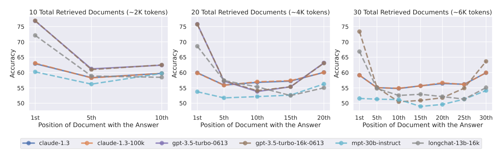
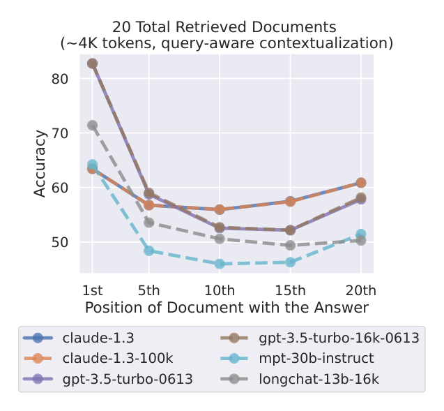
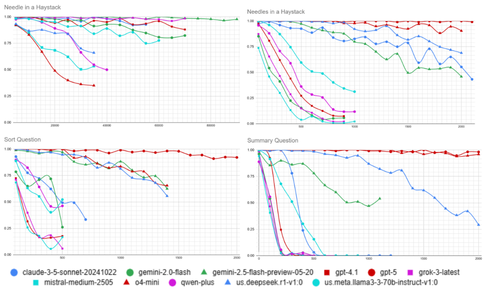
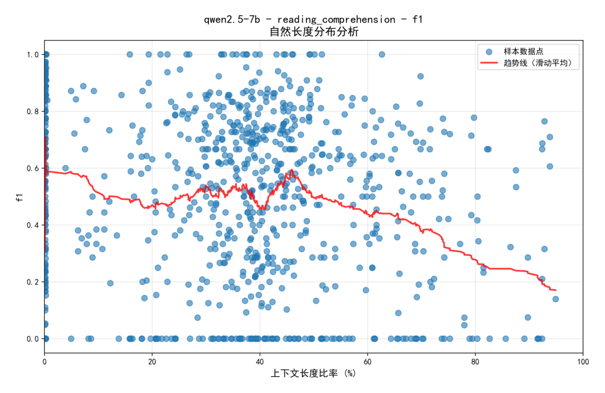

「上下文的纪律」系列 · 第 2 篇
我们在给编码智能体喂什么，它们消化得怎么样
▍那条著名的曲线
上一期结尾留了个尾巴：AGENTS.md 里的指令明明被执行了、推理 token 多花了 22%，成功率却纹丝不动——"这些多花掉的注意力，到底去哪了？"当时说，答案的线索比 AGENTS.md 早了两年多，已经有人给长上下文画过一条著名的曲线。今天就来兑现这张支票。
先把一个更常见的场景摆上桌：你的模型窗口规格是 1M token，于是你把整个代码库、几十页需求文档、半年的会议纪要一股脑塞进对话框——反正装得下。装得下，就等于用得好吗？本期三篇论文的答案都是"不"，而且它们合力给出两条可以直接落地的纪律：放多少——总量要控制在实际理解劣化边界以内，而不是规格窗口以内；怎么放——注意力在上下文的两头权重较大、中部可能被遗忘，内容的顺序要安排。
【人工补充位 · 建议 2-4 句】写一段你自己"往窗口里塞东西"的经历：比如你把多长的文档/规范/代码塞给过模型，当时期望什么、实际效果如何——有没有出现过"材料明明在里面，它却说不知道"的情况。这段亲历是从别人的研究过渡到你的两条纪律的桥。
本期论文（三篇）
① Lost in the Middle: How Language Models Use Long Contexts
迷失在中部：语言模型如何使用长上下文
Nelson F. Liu et al.（Stanford / Berkeley / Samaya AI），2023，TACL 2024｜对应纪律二：位置
② Context Is What You Need: The Maximum Effective Context Window for Real World Limits of LLMs
你需要的其实是上下文：大模型现实极限的最大有效上下文窗口
Norman Paulsen（Accion Group），2025，ACM 会议论文｜对应纪律一：容量
③ Intelligence Degradation in Long-Context LLMs: Critical Threshold Determination via Natural Length Distribution Analysis
长上下文大模型的智能退化：基于自然长度分布的临界阈值判定
Weiwei Wang, Jiyong Min, Weijie Zou，2026-01（arXiv:2601.15300）｜对应纪律一：边界形态
名词速查
▸ MCW（最大上下文窗口）：厂商规格页上写的窗口上限（128K、1M 等），是架构能"装下"的 token 数。
▸ MECW（最大有效上下文窗口）：某类任务上模型准确率开始可测下降的 token 阈值，是实际"读得好"的边界。
▸ 大海捞针（needle-in-a-haystack）：在长文本里藏一条关键信息再让模型找出来的测试，是最常见的长上下文考题。
▸ RoPE（旋转位置编码）：主流模型表达"token 之间距离"的方式，像时钟指针——转过了一圈，远处的位置就开始长得一样（下文会用到）。
Lost in the Middle 的实验设计干净得漂亮：给模型 10、20、30 篇文档，其中只有一篇包含答案，其余全是干扰项——然后只动一个变量：把那篇"金文档"放到第 1、第 5、第 10……直到最后一篇。如果模型对上下文的利用与位置无关，成绩应该是一条水平线。实际画出来的是一条 U 形曲线：

图 1｜多文档问答：横轴是金文档所在位置，纵轴是准确率。六个模型画出的都是 U 形——开头与结尾用得好，中部塌陷（原论文 Figure 5）
"…when relevant information is placed in the middle of its input context, GPT-3.5-Turbo's performance on the multi-document question task is lower than its performance when predicting without any documents (i.e., the closed-book setting; 56.1%). Furthermore … models often have identical performance to their extended-context counterparts, indicating that extended-context models are not necessarily better at using their input context."
── 中译：当相关信息放在输入上下文的中部时，GPT-3.5-Turbo 的表现甚至低于完全不给文档的"闭卷"设定（56.1%）。而且模型与自家扩窗版本的成绩几乎相同——扩了大窗口，并不就更会用上下文。
两个数字值得盯住。其一，"给文档反而不如不给"：闭卷 56.1% 意味着中部位置的信息不仅没帮上忙，干扰项还把模型自己的参数记忆带偏了。其二，扩窗无效：16K 版 GPT-3.5 与 100K 版 Claude 的曲线和原版几乎重合（下表）——窗口变大，中部盲区没有变小。
| 模型 | 闭卷（不给文档） | 开卷满分（文档含答案） |
|---|---|---|
| GPT-3.5-Turbo | 56.1% | 88.3% |
| GPT-3.5-Turbo（16K） | 56.0% | 88.6% |
| Claude-1.3 | 48.3% | 76.1% |
| Claude-1.3（100K） | 48.2% | 76.4% |
| MPT-30B-Instruct | 31.5% | 81.9% |
| LongChat-13B（16K） | 35.0% | 83.4% |
表 1｜闭卷 vs 开卷满分：扩窗版本与原版几乎相同（原论文 Table 1）
论文还试了一剂便宜的药：查询感知上下文——把问题本身在文档前后各复述一遍。在合成的键值检索任务上效果惊人，最差情况从 45.6% 拉到接近满分；但在真实的多文档问答上，曲线形态几乎没变。便宜的招治得了"检索"，治不了"理解"。

图 2｜查询感知上下文（绿）：键值检索近乎满分，多文档 QA 的 U 形依旧（原论文 Figure 9）
于是第一条纪律有了着落，写作时不妨把自己想象成交响乐的指挥：
▸ 关键信息（要被引用、被执行的内容）放开头和结尾；
▸ 长材料的中部只放背景性内容，并给它们装上"锚"——明确的编号、关键词、被上下文两端显式引用（"详见中部第 3 节的接口定义"）；
▸ 查询感知：把你的问题/指令在长上下文的首尾各放一份，成本低，对"查找"类内容有效。
其实 LitM 已经埋了总量问题的两条线索：扩窗不涨分，以及"阅读器早饱和"——检索器从 20 篇加到 50 篇文档，GPT-3.5 只提高了约 1.5%。但真正把"放多少"量化出来的，是后两篇论文。
MECW 论文做的事直截了当：拿 11 个前沿模型（GPT-5、Gemini 2.5、Claude 3.5、o4-mini、Grok-3 等），在四类由易到难的任务上做长度梯度测试，累计数十万个数据点，找出每个模型"准确率开始可测下降"的位置——也就是 MECW。结论用论文自己的话说：
"A few top-of-the-line models in our test group failed with as few as 100 tokens in context; most had severe degradation in accuracy by 1000 tokens in context. All models fell far short of their Maximum Context Window by as much as >99%."
── 中译：少数顶级模型在上下文只有 100 个 token 时就已失手；大多数模型到 1000 token 左右准确率严重退化。所有模型离自己的标称窗口都差得很远——差距最大超过 99%。

图 3｜准确率随上下文长度的退化曲线（原论文 Figure 5，四个任务面板）
两个细节让这个结论比"窗口虚标"更有意思。其一，MECW 不是单值而是谱：同一个模型，简单的"大海捞针"能撑很久，多条件聚合类任务几百 token 就开始掉——模型之间的排名也会随任务洗牌（o4-mini 在多针任务顶尖，在单针任务反而垫底）。其二，论文测了 RAG 的分界线：上下文控制在 MECW 以内时，简单 RAG 的幻觉率接近 0%；一旦越界，飙到接近 100%——边界内外是两个世界。
那越过边界之后会发生什么？Wang 论文的回答是这篇系列里最让人心里一沉的发现：不是缓坡，是断崖。用自然长度的真实语料（不截断、不填充）测 Qwen2.5-7B 的阅读理解，F1 分数在标称窗口的 40–50% 区间从 0.55 上下直坠到 0.30——跌了 45.5%（统计效应量 Cohen's d 高达 8.2）——而且：
"…performance does not recover even at longer contexts (up to 95%), suggesting that once the critical threshold is exceeded, the model's processing capabilities fundamentally break down."
── 中译：即使把上下文推到标称窗口的 95%，性能也不再恢复——临界阈值一旦越过，模型的处理能力是根本性地崩掉，不是暂时失手。

图 4｜自然长度分布分析：稳定区（0–40%）→ 断崖过渡区（40–50%）→ 退化区（50–95%，无恢复）（原论文 Figure 1）
为什么会有边界？Wang 给了一个能算出来的解释：RoPE 位置编码像时钟指针，周期之外远处的位置开始"长得一样"（位置混叠）。对 Qwen2.5-7B，理论预测断崖在标称窗口的约 49%，实测 43.2%，误差仅 13.4%；统一的临界点公式是三条瓶颈取最小值——位置编码、注意力聚焦、信息容量，谁先到谁先崩。这也解释了为什么"断崖"而不是"缓坡"：混叠不是渐渐变差，是过了周期就分辨不出。
于是第二条纪律可以给出数字了：
▸ 预算不按规格窗口定，按实测边界定——规格页上的 128K/1M 是"装得下"，不是"读得好"；
▸ 经验起点：长任务控制在标称窗口的 40% 以内（Wang 的红线，单一模型单一任务得出，按你的任务修正）；
▸ 超预算的内容，要么砍掉，要么拆开——分次会话、按子任务分发，别指望"塞进去它总能看到"。
把"放多少"和"怎么放"合成一张表，就是一次典型任务的上下文预算（下表为示例，属笔者实践建议、非论文内容）：
| 预算上限 | 首部（高权重） | 中部（低权重） | 尾部（高权重） | 超预算处置 |
|---|---|---|---|---|
| 实测边界内 （如标称的 40%） |
任务指令、关键约束、待答问题 | 背景资料、参考代码，配编号锚点 | 问题复述、输出要求、验收标准 | 先砍中部冗余；仍超则拆子任务 |
表 2｜上下文预算表（示例）：预算上限来自自测，位置分配来自 U 形曲线
这张表也回头解释了上一期的谜题的一半：AGENTS.md 为什么不涨点还贵 20%？因为 LLM 生成的文件往上下文里塞的是"仓库概览"这类冗余背景——既占了预算，又大概率落在低权重的位置区。上一期说"给"不等于"有用"，这一期补上了"为什么没用"的机制层。
三篇论文放在一张表里，会看到一个乍看尴尬、细想非常有用的现象——三把尺子给出的"有效窗口"读数相差最多约 50 倍：
| 论文 | 任务口径 | 有效窗口读数 | 证据强度 |
|---|---|---|---|
| LitM（2023） | 真实文档问答 | 数千～上万 token 已饱和（20 篇文档后增益 ~1.5%） | 高（TACL，真实语料） |
| MECW（2025） | 合成聚合任务 | 多数 ~1K token 显著退化（个别 100） | 中（单作者，合成数据） |
| Wang（2026） | 长文阅读理解 | ~55K（标称 43.2%）处断崖 | 中（单模型单任务） |
表 3｜三把尺子的读数：差异来自任务、模型与判定标准，方向一致——有效远小于标称
读数打架，说明"有效窗口"不是一个物理常数，而是"任务 × 模型 × 判定标准"的函数。所以两条纪律里最重要的其实是后半句：实测。一个可操作的自测法（笔者实践建议、非论文内容，思路借自 MECW 的长度梯度设计）：
① 取你自己任务的 10–20 个真实样本（不是通用考题）；
② 按长度分 4–5 档（如 2K / 8K / 32K / 标称 50%），用填充背景材料的方式控制长度；
③ 每档跑 3 次取平均，人工判定或脚本判定成功率；
④ 找到成功率明显下滑的拐点，日常预算取拐点的 8 成。
半小时的投入，换来的是你自己任务上的、对自家模型版本的边界数字——这比任何论文和任何厂商规格页都可靠。
▍注记：1M 窗口的新模型，会改变这两条纪律吗？
最新一代模型（DeepSeek V4、Kimi K3、MiniMax M3 等）用稀疏选择或线性状态的新式注意力把窗口推到 1M——但它们解决的是"装得下"的成本问题，不是"读得好"的利用率问题（后者主要受训练分布制约）。可以预期的变化是：检索型任务的可用长度大幅扩展，聚合推理型仍然远小于标称。也就是说，两条纪律一条都不会作废，反而更重要：窗口越标越大，尺子越要自备。（此段为机制推演；V4 架构细节目前为博客级信息，待官方论文与第三方实测校准。）
▍写在曲线之后
两条纪律合起来其实是一句话：上下文窗口是稀缺资源，不仅有总量上限，还有内部地形。把它当内存去管理——预算、放置、淘汰——而不是当仓库去堆放。
【人工补充位 · 建议 3-5 句】结合你的实践写评论，方向可选：①你排长 prompt/长文档的习惯（首尾放了什么、中部放了什么，看完这篇打算怎么改）；②你或你团队被"材料在里面它却说不知道"坑过的具体一次；③你的任务大概在什么长度上开始感觉到质量下滑——如果你做过类似自测，把数字写进来会是全文最有说服力的段落。
总量有限，位置有偏——上下文的使用，正在从"把材料都给它"变成"只把对的给它"。可是，"对不对"由谁来定？最省事的想法当然是把整个仓库、整份档案全交给模型，让它自己翻。它自己翻东西、自己找材料的本事，到底怎么样？这个问题，先卖个关子。
论文：Lost in the Middle（arXiv:2307.03172，TACL 2024）；Context Is What You Need（Paulsen，2025 ACM 会议论文）；Intelligence Degradation in Long-Context LLMs（arXiv:2601.15300）。
文中图表均引自原论文（LitM 图 5/9、表 1；MECW 图 5；Wang 图 1），引文为原文直录并附中译；数字已逐项与 PDF 原文核对。表 2（预算表）与"十分钟自测法"为作者实践建议，非论文内容。